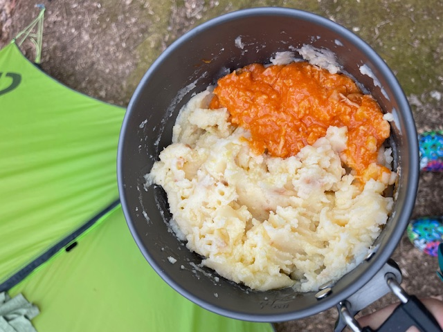

Trail Mashed Potatoes

Loaded Baked Potatoes with Buffalo Chicken
Mashed potatoes are a popular dish on trail, made better by the addition of delicious buffalo chicken.
This recipe also includes a bit of olive oil for the calories.
Ingredients
- 4 oz loaded baked potato flakes
- 5 oz Chicken Creations, buffalo style
- 1 tablespoon olive oil
- The willpower to eat this yet again
Steps
- Follow potato package instructions for cooking
- Immediately after mixing water and potatoes, stir in oil, then chicken
- Wonder how you will eat so much potato; do so anyway